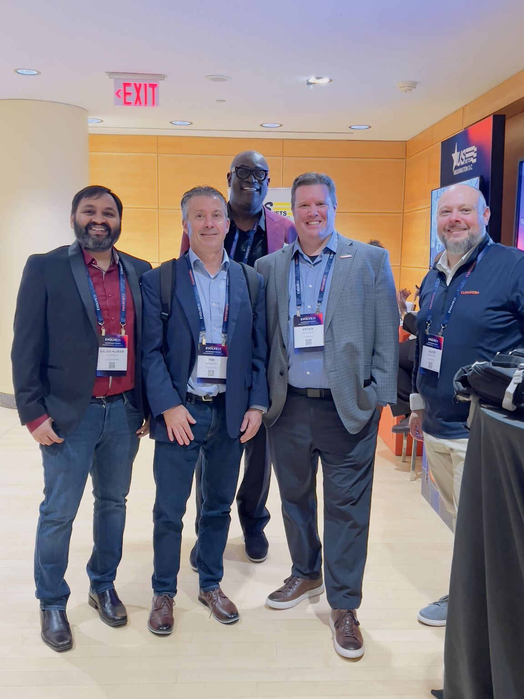
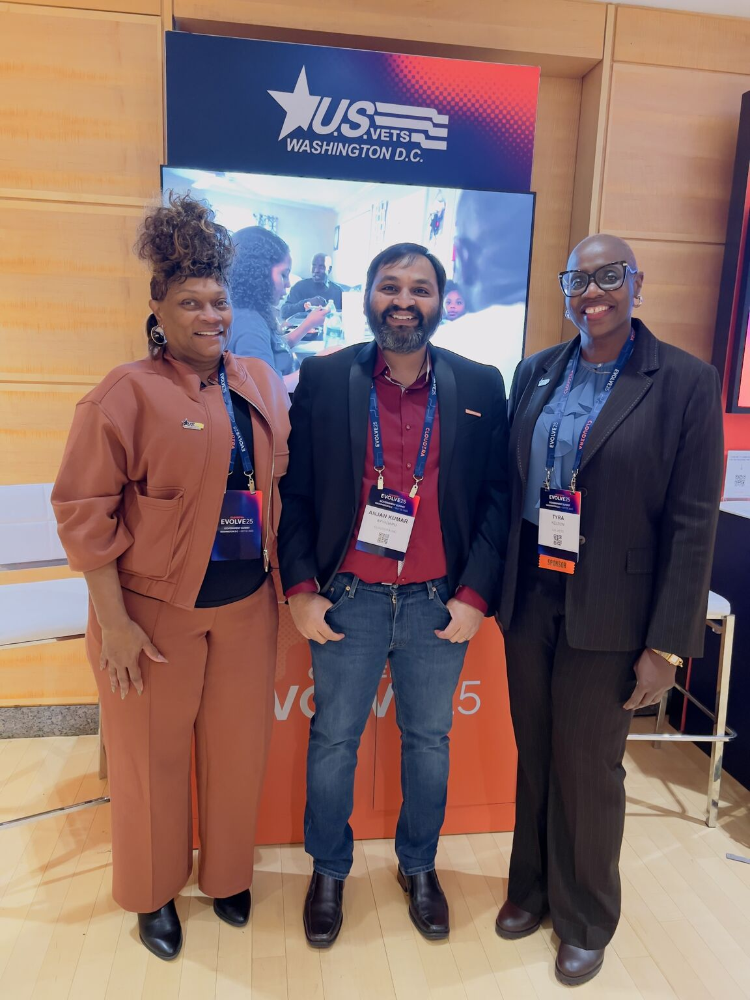
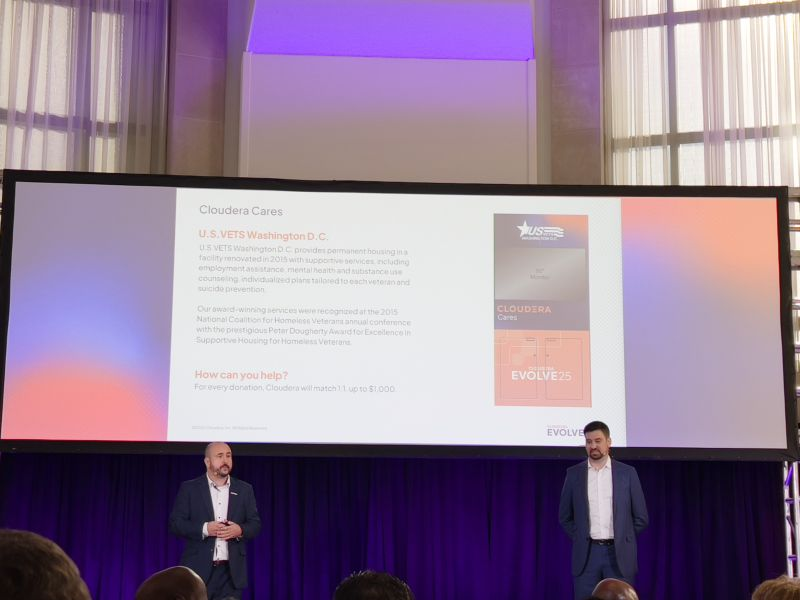
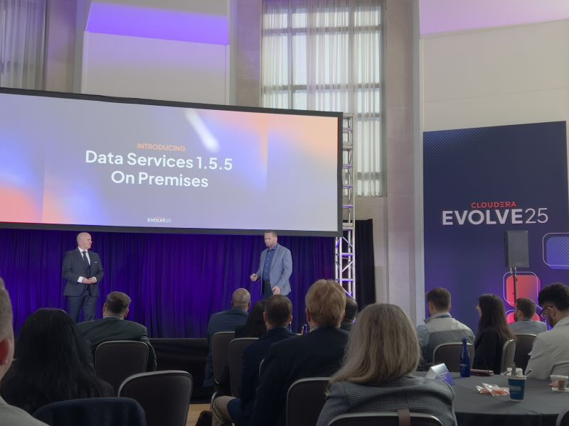

Data Platforms
Cloudera CDP, CDH, HDP, Spark, Hive, Impala, HBase, Iceberg, NiFi, Kafka, Oozie, Pig, Sqoop, Flume
Senior Solution Architect · Cloudera
Technology leader in Big Data, Hadoop, and cloud platform architecture — helping enterprises modernize data infrastructure and deliver Edge-to-AI solutions at scale.

I bring 18+ years of overall IT experience, with 13+ years in Big Data, Hadoop, and hybrid cloud platform architecture — currently as a Senior Solution Architect at Cloudera, guiding enterprise customers through CDP modernization and Edge-to-AI adoption.
I have built my career across Big Data engineering, DevOps, UNIX/Linux administration, and project leadership. For more than 13 years, I have specialized in Hadoop ecosystem platforms, multi-node cluster operations, and enterprise data architecture — from CDH and HDP through modern Cloudera CDP, Spark, Iceberg, and Edge-to-AI solutions.
At Cloudera, I lead post-sales architecture from onboarding through production — designing CDP deployments, CML/CDE/CDF data services, CDH-to-CDP migrations, and Kubernetes-based implementations for regulated enterprises. I architect open lakehouse solutions on Apache Iceberg with interoperability across analytics platforms and Databricks workloads on AWS, drive Spark modernization with up to 60% query performance gains, and built a Python-based capacity planning tool that reduced CDP Data Services planning effort by 90%. Before Cloudera, at Amazon Web Services I supported escalated Big Data workloads across EMR, Glue, SageMaker, and Athena — optimizing Spark, Hive, and HBase performance, authoring customer-facing knowledge base content, and acting as a liaison between service engineering and customer support.
I also design hybrid data platforms, lead legacy workload migrations to AWS and GCP, and deliver generative AI solutions with strong data governance. My work spans solution design, hands-on implementation, and executive-level customer advisory for regulated industries. I hold certifications from AWS, IBM, Databricks, Google Cloud, Stanford, and PMI — including AWS Solutions Architect Professional and AWS Machine Learning Specialty. I am an FBCS Fellow, SCRS Fellow, Docker Captain, Senior IEEE Member, peer reviewer, keynote speaker, and published AI researcher with multiple patents.
Platforms, tools, and domains I work with day to day.
Cloudera CDP, CDH, HDP, Spark, Hive, Impala, HBase, Iceberg, NiFi, Kafka, Oozie, Pig, Sqoop, Flume
AWS (EMR, Glue, Lake Formation, S3, EKS), GCP, GKE, Terraform, Docker, Kubernetes, Jenkins, Puppet, Chef
CML, CDE, CDF, Cloudera Manager, Ambari, multi-node cluster administration, CDH to CDP migrations
Generative AI, machine learning pipelines, Kerberos, Hadoop/Hive security, RBAC, encryption, compliance
Python, shell scripting, PowerShell, Red Hat Linux, SUSE, Windows Server
MySQL, PostgreSQL, AWS RDS, large-scale distributed data stores
18+ years across solution architecture, Big Data platforms, cloud engineering, DevOps, and enterprise operations.
Cloudera Inc. · McLean, VA
Amazon Web Services
XScion Solutions LLC · Virginia
XScion Solutions LLC · Virginia
Tusker Solutions · Client: Apple · California
IBM · Pune, India
IBM · Pune, India
Wipro · Bangalore, India
Peer-reviewed articles, conference papers, patents, and books from ORCID and academic publishers.
FMDB Transactions on Sustainable Intelligent Networks
AVE Trends in Intelligent Computing Systems
2025 International Conference on Computing Technologies and Data Communication (ICCTDC)
FMDB Transactions on Sustainable Intelligent Networks
International Conference on Intelligent Algorithms for Computational Intelligence Systems (IACIS)
1st International Conference on Electronics, Computing, Communication and Control Technology (ICECCC)
Chelonian Conservation and Biology
International Neurourology Journal
Chelonian Conservation and Biology
International Neurourology Journal
Chelonian Conservation and Biology
Chelonian Conservation and Biology
Journal of Research Administration
Journal of Basic Science and Engineering
Patent application publication
Explores core concepts of machine-made intelligence and data analytics frameworks, including dimensionality reduction, clustering, and interpretable visual analytics.
Covers methodologies in modern embedded systems and software engineering for building reliable, production-grade embedded solutions.
Technical writing, Docker Captain features, DZone articles, and LinkedIn thought leadership on Big Data, cloud, and AI.
Docker Inc asked Docker Captains to share the tips they wish every engineer knew. I contributed
tip #6 on .dockerignore — treat it like .gitignore for your build
context. Whitelist only the files your image needs to keep builds faster, images leaner, and
secrets out of container layers.
Deploy powerful LLMs using Docker and Kubernetes — scale with GPUs, fine-tune models, and automate inference workloads.
May 2025Use LLMs in Cloudera to convert natural language into PySpark or SQL, run pipelines with CDE, and manage governed data with Iceberg and SDX.
Apr 2025Run Gemma 3 locally using Docker Model Runner for private, efficient GenAI development with fast setup and offline inference.
Supporting veteran-focused causes through Cloudera Cares at company events and community initiatives in the Washington, DC area.




At the Cloudera EVOLVE25 DC Government Summit, I joined Cloudera Cares in supporting U.S.VETS (United States Veterans Initiative). The summit paired a major public-sector AI and data event with a direct commitment to veterans — raising contributions for programs that provide housing, workforce development, and mental health services.
During Cloudera’s Week of Giving, I supported veteran-focused organizations including U.S.VETS and Wounded Warrior Project — programs that provide housing, career resources, and wellness services to veterans in need. I also helped raise awareness for the U.S.VETS Workforce Team’s Employment & Resource Expo (December 11, 2025, Washington, DC), connecting veterans with employment opportunities and essential resources in the DMV community.
Interested in consulting, speaking, or collaboration? Share your full details below and I will get back to you by email.